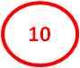

Привязка к пространственным объектам
 Панель Geo Reference – служит для привязки документов к пространственным объектам и содержит три поля.
Поле Selected используется для вывода перечня выбранных объектов привязки.
В поле Layers представлены тематические слои - Overlays - с объектами, к которым осуществляется привязка документов, а также возможные картографические основы - Base Maps - (общедоступные карты Интернет порталов: OpenStreet Map и MapBox, и космический снимок). Пользователь может отметить галочкой необходимую ему картооснову, а также требуемый тематический слой, в котором находится нужный объект, а остальные слои отключить. Данное поле для удобства можно свернуть/развернуть, нажав на пиктограммы или .
Пользователь имеет возможность редактировать тематические слои и добавлять туда недостающие объекты (см. меню Map).
В третьем поле находится карта с нанесёнными объектами разных тематических слоёв. В поле имеется значок масштабирования карты  , позволяющий уменьшать или увеличивать масштаб представления карты.
, позволяющий уменьшать или увеличивать масштаб представления карты.
Для пространственной привязки пользователь должен в поле Layers отметить нужный тематический слой, содержащий объект привязки, а в поле карты выбрать (нажать левой кнопкой мыши) один или несколько (с нажатой клавишей Shift) объектов, к которым требуется привязать документ. Выбранные объекты подсветятся, и в поле Select появится список объектов привязки. Этот список можно корректировать и в случае, если объект указан ошибочно, повторное указание на него уберёт его из списка привязки.
После надлежащего заполнения всех необходимых полей в панелях метаданных и привязки документа к пространственному объекту пользователь должен нажать на кнопку Add в правом нижнем углу интерфейса, и Приложение загрузит новый документ в хранилище.